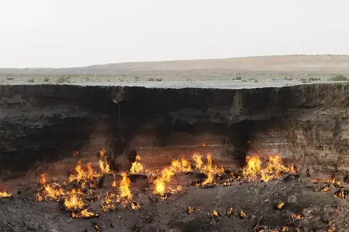
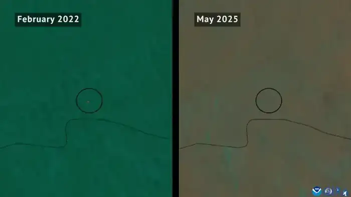
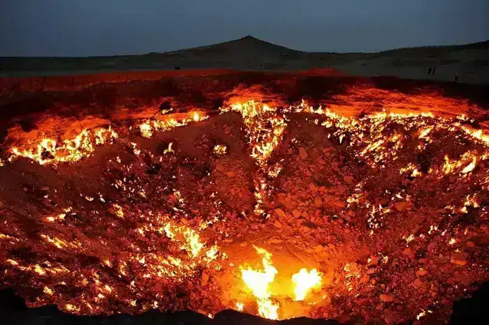

The site
The Darvaza crater in Turkmenistan is about 70 metres across and 30 metres deep. It formed in 1971 when a Soviet drilling rig hit a gas cavity that collapsed beneath it. The gas was set alight, on the assumption that it would burn out in a few weeks.
Maps, diagrams and images






What happened
It has burned for more than fifty years. The crater is a methane vent, and the fire consumes the gas as it escapes. There is no portal, no bottomless pit, and no supernatural element — it is a well-documented industrial accident with an unusually long afterlife.
The Turkmen government has announced plans to extinguish it several times, on environmental and economic grounds.
Documented: the collapse, the ignition and the duration.
Documented: the methane source.
Not established: any depth beyond the measured cavity.
Not mysterious: no exotic cause required.
The label: documented.
Why it is in the archive
Because it is a real place whose name promises something the geology does not, and because the name is doing most of the work.
Open resources on this topic
- PapersOpen-access articles: DOAJ · PubMed Central · Internet Archive Scholar
- BooksPublic-domain and borrowable copies: Open Library · Project Gutenberg · Google Books · Internet Archive
Cite this page
Momin, S. (2026). The Door to Hell. The Larger World Archive. https://drsamonline.github.io/LARGE_GLOBE/door-to-hell.htmlMomin, Sohil. “The Door to Hell.” The Larger World Archive, 2026, https://drsamonline.github.io/LARGE_GLOBE/door-to-hell.html.Momin, Sohil. “The Door to Hell.” The Larger World Archive, 2026. https://drsamonline.github.io/LARGE_GLOBE/door-to-hell.html.@misc{the2026door,
author = {Momin, Sohil},
title = {The Door to Hell},
year = {2026},
howpublished = {The Larger World Archive},
url = {https://drsamonline.github.io/LARGE_GLOBE/door-to-hell.html},
note = {Last reviewed 20 November 2026}
}Last reviewed 20 November 2026 · Corrections policy · this page is not peer reviewed
Sources for this page
- Wikipedia, “Darvaza gas crater” — the siteen.wikipedia.org
- Wikipedia, “Natural gas” — the fuelen.wikipedia.org
- Wikipedia, “Sinkhole” — the formation mechanismen.wikipedia.org
- Wikipedia, “Turkmenistan” — the countryen.wikipedia.org